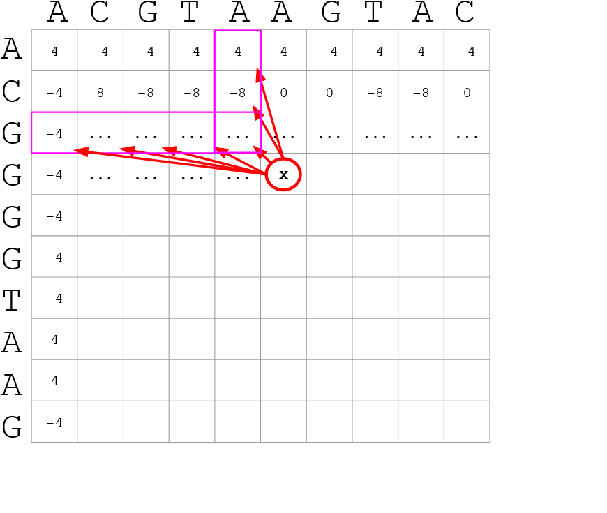
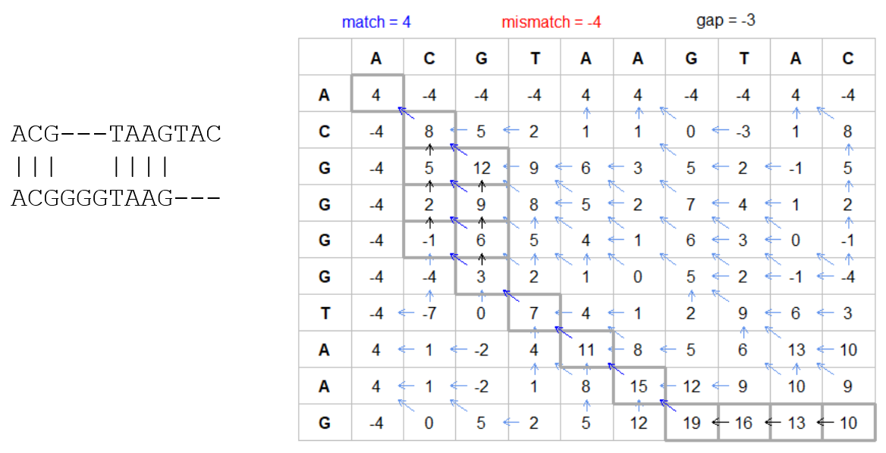

High Performance Computing for Pairwise Genome Comparison
Contributors
Questions
What is sequence comparison and why does it matter?
What are the challenges and how can we use High Performance Computing to overcome them?
How can we use Galaxy for large scale sequence comparison?
Objectives
Learn the basics of genome comparison
Run sequence comparisons in Galaxy
Using GECKO for sequence comparison
Using CHROMEISTER for comparing large sequences such as plants and chromosomes
What is sequence comparison?
- Finding string matches between text paragraphs
-
Comparing biological sequences can be seen as an instance of common string matching problem but with some particularities
- Restricted alphabets: e.g. DNA = {A, C, G, T}
- It adds an additional dimension
- instead of looking for only one pattern, we have to look for all possible patterns!
Why is it importantg?
- Sequence comparison is a core problem of bioinformatics that allows us to study:
- Evolution (Where do we come from? And other species?)
- Structure (What are we made of? How does our body work?)
-
Functionality (How do changes in our DNA affect us?)
- Widely used in several fields!
- Whole genome alignment, gene prediction, phylogenomics, pharmacogenetics, metagenomics, etc.
What are the challenges?
- A lot of progress has taken place since the beginning (around 1960s)
-
So what is the problem?
- New technology produces huge amounts of data
- Optimal sequence comparison has complexity O(n2), which is a lot when sequences are long
- Several ways to compare sequences, each having its advantages: DP-based, gapped and ungapped, alignment-free
- DNA contains lots of repeats and low complexity regions, which make it difficult to find the conserved signal
- And also makes it very hard for computational algorithms
Why is sequence comparison hard?
- The complexity of the problem grows as the length of the sequences becomes larger
- That means that for small sequences it is OK; but for large sequences the problem can take a lot of time
- Computing power doubles every two years according to Moore’s law but sequence databases grow purely exponential every year
| Sequence type | Approx. length |
|---|---|
| Gene | ~1,000 to 10,000 bp |
| Bacteria genome | ~106 bp |
| Mammalian chr. | ~108 bp |
| Mammalian genome | ~2 * 109 bp |
| Plant genome | ~3 * 109 bp |
| Large plant genomes | ~2 * 1010 bp |
| Amoeba genome | ~6 * 1011 bp |
Exponential growth of the Sequence Read Archive
- Other databases have experienced similar growth too
Methods for sequence comparison
- Dot-matrix comparison (no alignments)
-
Comparing all letters with each other (extremely slow/noisy)
- Alignment-free methods
-
Similar to the previous but typically based on k-mers (words)
- Aligning methods
- Exhaustive dynamic programming algorithms (Slow but optimal)
- Local alignment
- Global alignment
- Seed-based heuristics
- Words of fixed size are used to start alignments (Fast but less sensitivity). Can also include gaps.
- Exhaustive dynamic programming algorithms (Slow but optimal)
Dot-matrix methods
- Takes each letter in both sequences and compare it to all the rest
- Takes quadratic time and space!
- Does not produce alignments, but rather just represents a comparison
- The x and y axis represent the sequences being compared

Comparing genomes with dotplots
How useful are raw dotplots?
.pull-left[
-
Dot matrix methods do not take into account the global information or context
-
Noise
-
Where is the signal? ]
.pull-right[.image-70[]]
How do we include alignments?
.pull-left[
-
Alignments have to take into account their surroundings!
-
Use dynamic programming to compute an accumulated score
- Match = 4
- Miss = -4
]
.pull-right[ .image-70[ ] ]
How do we include alignments? Cont. I
.pull-left[
-
Alignments have to take into account their surroundings!
-
Use dynamic programming to compute an accumulated score
-
The score of each cell comes from either the diagonal (no penalty but match/mismatch score) or from a row or column, which is a gap in either the query or reference sequence (“jumping” gap penalty is included then)
- Match = 4
- Miss = -4
- Gap = -iG - eG*L
]
.pull-right[  ]
How do we include alignments? Cont. II

How do we include alignments? Cont. III
-
But what if the two sequences are not toy examples?
-
Typically, a mammalian chromosome is around the 100 Mbp mark
-
Worst case scenario this algorithm takes quadratic time and space
- Imagine comparing two amoeba genomes (Not your usual case, though)
- Total number of cells: 1022 ~the number of sand grains in the earth
How do we include alignments? Cont. IV
How to speed up finding alignments?
-
DP algorithms are not feasible for long sequences
-
Use seeds of fixed size (k-mers) to find anchor points and then perform the alignment
-
Can be done in linear time
-
But careful, the number of common seeds can be huge and optimization is still needed
How to speed up finding alignments? Cont. I
How to speed up finding alignments? Cont. II
-
Extend the common seeds identified previously to form larger fragments
-
These are called High-scoring Segment Pairs and do not typically include gaps
-
Some programs (such as BLAST) include small gaps
- This approach also enables to compare distant sequences with many evolutionary rearrangments since fragments do not require to be close to each other
- Similar result to the local dynamic programming algorithm (as opposed to the global approach where everything is connected)
How to speed up finding alignments? Cont. III
Recap on Sequence comparison
-
Sequence comparison is inherently hard because it requires quadratic time and space to produce optimal alignments
-
Especially when there are more (and longer) genome sequences available everyday (Ensembl blog)
-
Heuristic approaches based on seeds are required to cope with the complexity of dynamic programming methods
-
Tools are needed to quickly compare sequences while providing insightful information
Methods
-
Now that we have a general background on sequence alignment, lets jump to the software that we will use in this tutorial
- GECKO: fine-grained sequence comparison that uses secondary memory to enable virtually comparisons of any size
- GECKO Multi-Genome-Viewer: A tool for the interactive inspection of sequence comparisons
- CHROMEISTER: Ultra-fast approach for the previsualization of sequence comparisons while dealing with noise and repeats, including full mammalian genomes and plants
GECKO
-
Pairwise genome comparison software which reduces execution time in pairwise and multiple genome comparison studies
- It uses an ‘out of core’ strategy, i.e. it runs on secondary memory (disk) as opposed to RAM
-
Can run anywhere, about ~4 GB of RAM and ~1 TB of disk required for the longest sequences
- Faster than state-of-the-art software especially for longer sequences such as chromosomes
The GECKO algorithm
The GECKO algorithm (Cont. I)
-
A dictionary is computed for each sequence containing the positional information of each word (possible seed)
-
Once each dictionary is sorted, perfect matches between words produce a set of seeds (alignment candidates)
-
Seeds are then sorted (by their diagonal position xstart - ystart) and filtered
-
Finally, the seeds are extended (up and downstream) to generate a set of High-scoring Segment Pairs (HSPs)
Parallelising GECKO
.pull-left[
-
In a static distribution cores can become idle if they finish before other cores → resources are wasted
-
GECKO uses MPI to distribute the workload dynamically based on the length
-
When a core (worker) has finished executing a task (comparison) the master node broadcasts more work
-
This reduces overall makespan time because of workload balance
]
.pull-right[ ] —
Parallelising GECKO (Cont. I)
.pull-left[
-
GECKO also employs a second level of parallelism besides using MPI to distribute data dynamically
-
It consists on sorting the initial seeds found (which is the most time-consuming step) using shared memory threads (pthreads and openMP)
-
Each core uses up to
tthreads to sort the dictionaries containing the seeds ]
.pull-right[ ] —
GECKO-MGV: interactive sequence comparison
-
GeckoMGV is a Web-based application aimed to visualize results from multiple genome comparison allowing deep data analysis. It features:
-
User friendly interface
-
Multilayer for displaying and overlaying comparisons
-
Interactive zooming and filtering
-
External and proprietary post-processing services
-
Adaptable from equivalent software (e.g. MAUVE)
-
Dendrograms and Multiple Sequence Alignment visualization
GECKO-MGV: interactive sequence comparison (Cont. I)
GECKO-MGV: interactive sequence comparison (Cont. II)
-
A typical exercise would include running a sequence comparison with GECKO
-
Visualizing the alignments with GECKO-MGV
-
Interactively selecting regions of interest and performing post-processing
-
Such as selecting repeats, extracting them and performing multiple sequence alignment to find out single point mutations
GECKO-MGV: interactive sequence comparison (Cont. III)
CHROMEISTER: Motivation
.pull-left[
-
GECKO is suitable for chromosome comparisons
-
But all vs all chromosomes between any two species generate usually over 400 comparisons
- This results in extremely large computation times
- Do all of these even have any similarity signals?
- Instead of runnning everything from scratch with GECKO, first use CHROMEISTER to detect significant comparisons ]
.pull-right[
 ]
]
CHROMEISTER: Motivation (Cont. I)
.pull-left[
-
Comparisons tend to be full of repetitions in large mammalians, let alone plants!
-
State-of-the-art methods get stuck handling large number of repetitions or resulting dotplots are too noisy
-
Can we extract any information from raw seeds (hits) without having to generate fragments (slower)? ]
.pull-right[ ]
CHROMEISTER: Motivation (Cont. II)
CHROMEISTER: Methods
-
CHROMEISTER (CHROmosome MEISTER) is an ultra fast heuristic approach to computing extremely large pairwise genome comparison in desktop PCs
-
Hybrid indexing approach
-
Heuristically select long, unique and inexact hits!
-
Probabilistic filtering
-
Higher concentration of unique hits within HSPs
-
Apply a kernel to improve visualization
CHROMEISTER: Methods (Cont. I)
-
Heuristically select unique and inexact seeds:
- Hits with frequency above one are repetitions by definition (in a computational sense) so we remove them
- Short k-mers produce repetitions and noise, so we have to use long k-mers
-
But long k-mers produce less seeds due to biological evolution, therefore a certain inexactitude is allowed
- Are these two words equal? Under what considerations?
CHROMEISTER: Methods (Cont. II)
- Probabilistic filtering
- The probability of a sequence region containing more hits will be higher if there was an existing HSP!
-
The discrete dotplot is downsampled to a smaller representation to group hits into blocks (similar to HSPs)
- Kernel and score calculation
- A kernel is convoluted with the dotplot to improve visualization and remove single repetitions
- The scoring distance is calculated between the peak hit points using taxicab distance:
CHROMEISTER: Examples
CHROMEISTER: Conclusions
.pull-left[
- Produces a dotplot visualization in minutes using 1 core and 1 GB of RAM
- It is used in the plants community
- This is due mostly to its ability to filter repeats and to handle large sizes
-
Also used for analysis of contig/scaffold reordering
- (Right) Pairwise genome comparison between Aegilops tauschii (3.2 Gbps) and Triticum aestivum (4.2 Gbps) in under 16 minutes using 1 core and 1 GB of RAM ]
.pull-right[
 ]
]
Key Points
- Sequence comparison is difficult due to its computational complexity and the growth of databases
- There are several approaches to sequencen comparison, and we need to know which one to use (DP-based, alignment-free, seeds, etc.)
- We have learnt the internals regarding GECKO, GECKO-MGV and CHROMEISTER to work with single chromosome comparisons and/or exhaustive searchs, the post-processing and for larger/noisy experiments, respectively
Thank you!
This material is the result of a collaborative work. Thanks to the Galaxy Training Network and all the contributors! Tutorial Content is licensed under
Creative Commons Attribution 4.0 International License.
Tutorial Content is licensed under
Creative Commons Attribution 4.0 International License.